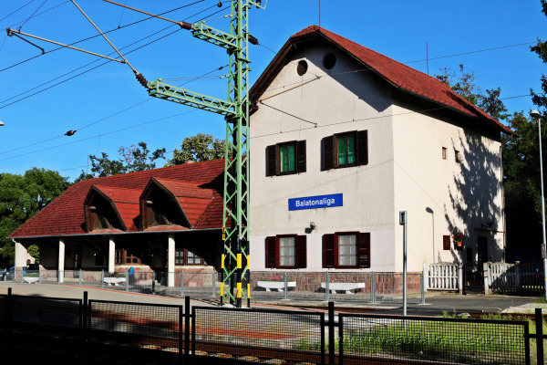

Warum lohnt sich ein Besuch in Balatonaliga?
Balatonaliga ist ein ruhiger Ort am Balaton mit Uferstimmung, schönen Ausblicken und entspannter Ferienatmosphäre. Vom Bahnhof aus erreichst du den See und mehrere Ausflugsziele in der Umgebung.
